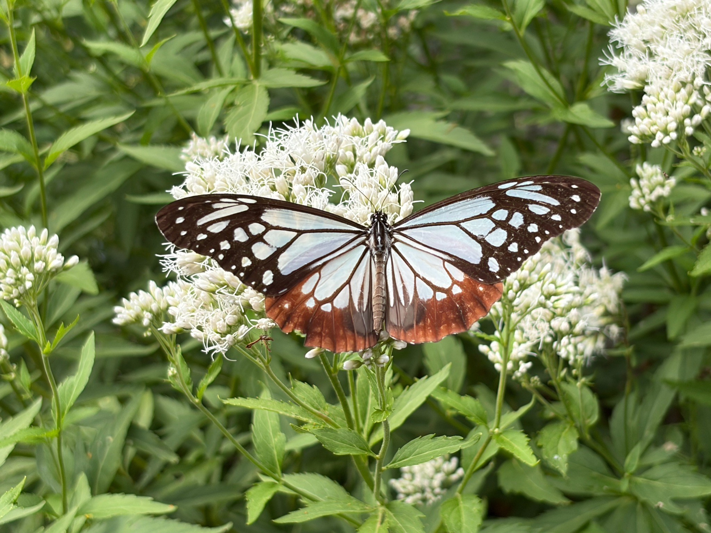
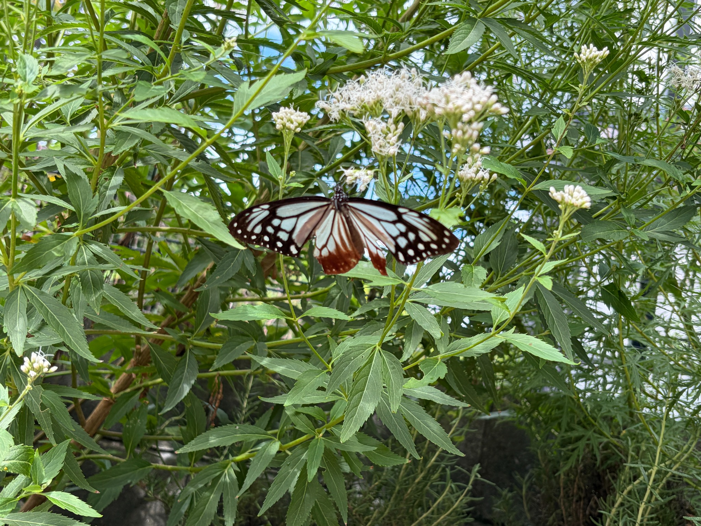
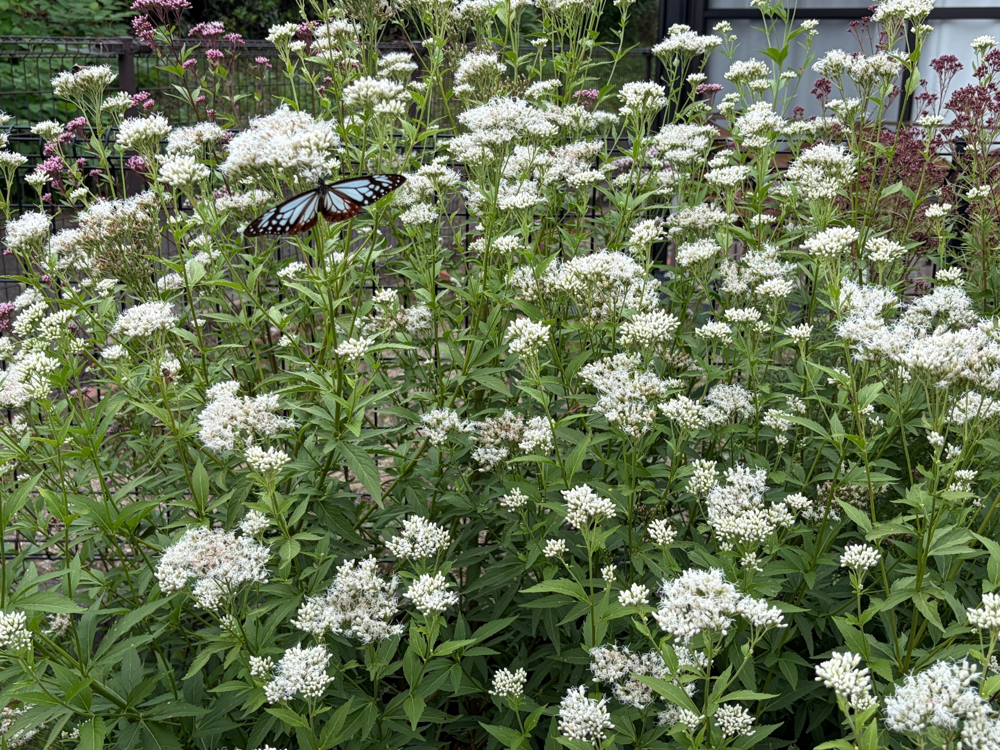
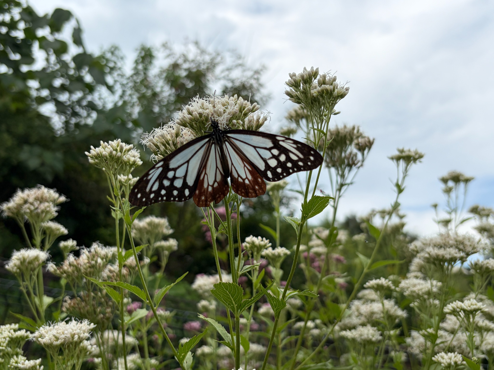
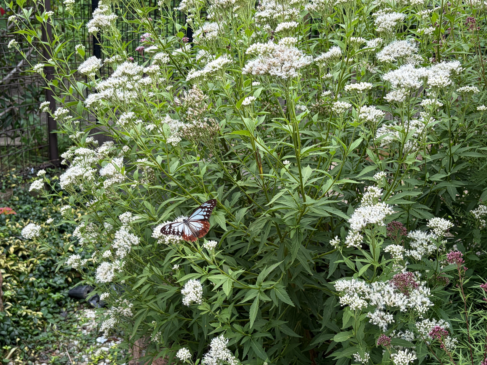
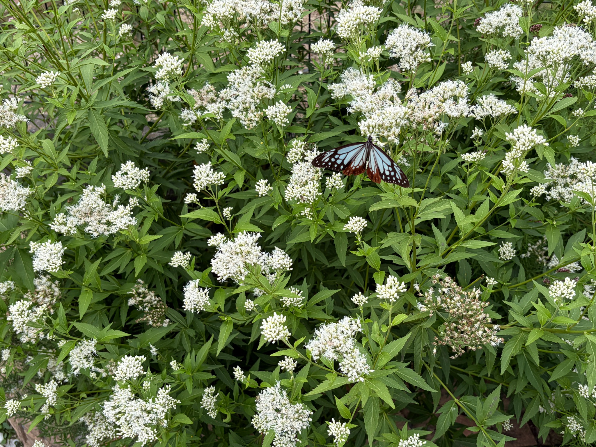
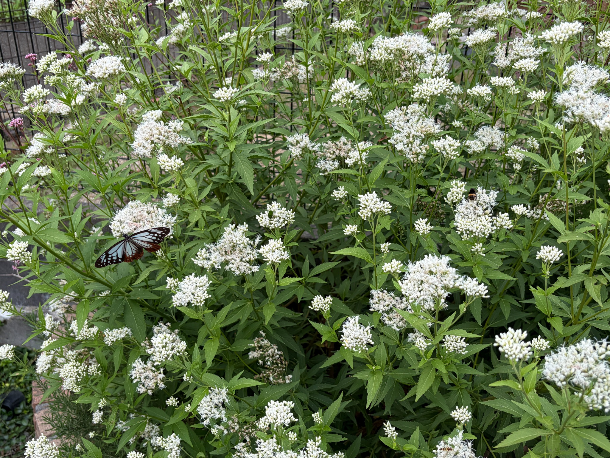

2026/10/12 白フジバカマ（原種系）にアサギマダラが飛来
2026年10月12日、庭の白フジバカマ（原種系）にアサギマダラがやって来ました。白い花房にとまり、淡い水色と茶色の翅を大きく広げています。白い花と緑の葉の間で、その姿がとてもよく目立ちます。育ててきた花にアサギマダラがとまっている様子を、近くから、そして株全体が見える位置から写真に残しました。
白フジバカマは、株のあちこちに白い花房をつけています。ただ、白く見える花房がすべて同じ状態というわけではありません。糸状の白い部分がふんわりと広がった花房もあれば、細長い蕾がまとまって残る花房もあります。さらに、開いた花の中に薄茶色や褐色の部分が混じる花房も見られ、これから咲く部分、今咲いている部分、咲き進んだ部分が一緒に見られる状態です。
白い花房にとまるアサギマダラ

近くから見ると、アサギマダラの翅の模様がはっきり分かります。翅を左右に大きく広げ、白い花房の上にとまっています。淡い水色の部分を濃い茶色の線が区切り、外側には白い斑点が並んでいます。後ろの翅の茶色がかった部分も、白い花を背景にするとよく見えます。
アサギマダラがとまっている花房には、白い糸状の部分が広がっています。そのすぐ周りには、まだ開いていない細長い蕾も数多く残っています。ひとつの花房の中でも、開いた花と蕾が入り交じっており、花房全体が一斉に咲きそろうというより、小さな花がそれぞれ少しずつ開いている様子がうかがえます。
花房の白さだけを見ていると、どれもよく咲いているように感じますが、近づいて見ると違いがあります。糸状の部分が広がったところは柔らかく、ふんわりした輪郭になっています。一方、蕾が多いところは一本一本の形がはっきりしており、まとまりが引き締まって見えます。同じ白い花房でも、開花の段階によって表情が変わっています。

茎葉の間にある花房にも、アサギマダラがとまっています。花房の手前で翅を広げ、周囲には細長い緑の葉が重なっています。高い位置の花だけでなく、枝葉の間にある花房にもとまる姿を残すことができました。
この周辺でも、糸状の花が広がる部分と、白い蕾がまとまって残る部分が見られます。開いた花が目立つ花房の近くに、まだ蕾の多い小さな花房もあり、株の中でも開花の進み方がそろっていません。枝先ごとに咲く時期が少しずつずれているように見えます。
株全体に広がる白い花房

少し離れて見ると、白い花房が株の広い範囲に分布していることが分かります。上へ伸びた茎の先だけでなく、左右へ広がる枝や手前の低い位置にも花房があります。高低差のある花房が重なり、株全体に奥行きが出ています。その白い花房の中に、翅を広げたアサギマダラの姿が見えます。
大きな花房では、白い糸状の部分がまとまって広がり、離れた位置からでも開花している様子がよく分かります。一方、その周りには、白い蕾が密に並ぶ花房がまだ多く残っています。大きな花房が咲いていても、近くの小さな花房は蕾が中心という場所もあります。
花房の大きさだけで、咲き具合を判断することはできないようです。大きくても蕾の多い花房があり、小さくても糸状の部分が広がっている花房があります。それぞれの枝や花房が、少しずつ違う段階にあると感じます。
株全体としては白い花が十分に目立つ状態になっていますが、まだ蕾も多く残っています。すべての花房が同じように咲きそろった姿ではなく、開花が続く中で、先に咲いた花の変化も見られるようになってきました。

空を背景にした写真では、花房にとまるアサギマダラと、上へ伸びた茎の様子がよく分かります。翅を広げた姿のすぐ上には、糸状の白い花が開いています。その隣には、細長い蕾が密に集まった花房があり、近い位置でも咲き具合が異なっています。
同じくらいの高さにある花房でも、開いた花が多いものと、まだ蕾が目立つものがあります。高い位置から順番に咲く、あるいは大きな花房からすべて咲くというような、単純な進み方ではなさそうです。株全体の開花を見るには、目立つ花房だけでなく、その周りの小さな花房や枝先にも目を向ける必要があると感じます。
開いた花、残る蕾、褐色に変わった部分

株の手前にも白い花房が広がり、アサギマダラがとまっています。周囲には緑の葉が多く、花房を支える茎や枝が何本も立ち上がっています。今回写した範囲では、株全体が黄ばんだり、葉が一斉に枯れ込んだりしている様子はなく、花の下には緑の葉がしっかり残っています。
花房を見ていくと、真っ白な糸状の部分だけでなく、薄茶色に見える部分も混じっています。白い糸状の部分が広がる中に、色の変わった小さな花が点在する花房もあります。まだ蕾を多く残す花房とは違い、開花してから時間がたち、咲き進んだ部分が出てきているように見えます。
ただ、花房全体が一度に茶色くなっているわけではありません。白く開いた部分が残る中に褐色の部分が混じり、同じ花房の中でも状態に差があります。先に開いた小さな花から変化し、その間にも別の花が開いているのかもしれません。

この写真では、開いた花と蕾の違いに加え、褐色に変化した花房も分かりやすく見えます。アサギマダラの周囲には白い糸状の花があり、その上下や左右には、まだ開いていない白い蕾が残っています。一方、右下などには褐色の部分が目立つ花房もあります。
こうして見ると、現在の株は、これから咲く花房だけでも、咲き終わりに向かう花房だけでもありません。蕾の多い花房が残る一方で、よく開いた花房があり、さらに先に咲いた部分では色の変化が始まっています。開花の始まりから、その後の変化までが、ひとつの株の中で重なっている状態です。
褐色の部分があるからといって、株全体の開花が終わったとは感じません。周囲にはまだ白い蕾が多く、糸状の花が広がる花房もあちこちにあります。先に咲いた花が変化する間にも、残っている蕾が開く余地があり、花房ごとに時期をずらしながら開花が続いているように見えます。

最後の写真でも、白い花房にとまるアサギマダラと、周囲に広がる花や蕾を一緒に残しました。開いた花がふんわりと広がる花房の近くに、白い蕾がまとまった花房があります。花房によっては白い部分と褐色の部分が混じり、株の中で開花の段階が異なることがよく分かります。
葉は茎に沿って重なり、枝先の大小の花房を支えています。花の高さや枝の向きにも違いがあり、株を一方向から見るだけでは分かりにくい花房もあります。近くで見ると花房の中の細かな違いが分かり、離れて見ると株全体への花の広がりが分かります。
10月4日からの変化と、今の開花状況
10月4日は、白い蕾が密に並ぶ花房が多く、中央や左側、手前などの一部の花房で、糸状の白い花が広がっていました。株全体ではまだ蕾のまとまりが目立ち、花房ごとに咲き具合が異なる、開花途中の姿として記録しました。
8日後の10月12日も、まだ多くの蕾が残っています。ただ、今回の写真では、大きな花房を中心に白い糸状の部分がまとまって広がり、株の広い範囲で開いた花が目立ちます。10月4日に続いて開花が進んでいる様子に加え、先に咲いた花房の一部では、薄茶色や褐色の変化も見られるようになっています。
今は、単に蕾が開いて白い花が増えるだけの段階から、開いた花と咲き進んだ花が重なる段階へ移ってきたように感じます。それでも、蕾の多い花房がまだ残っているため、株全体が咲き終わりに向かっていると決めるには早いと思います。
白い花房が数多く見られるので、見た目にはとてもにぎやかです。ただ、白い蕾も花房の白さに含まれているため、遠くから見た印象だけで「満開」とは言い切れません。私には、よく咲いた花房が増え、先に咲いた部分では変化が始まりながらも、これから開く蕾が残っている状態に見えます。
花房ごとに咲く時期がずれることで、株全体として白い花を楽しめる期間が続いているのかもしれません。一斉に咲いて一斉に終わるというより、先に開いた花が変化する間に、別の蕾が開いていく。その重なりが、今の株の姿に表れているように感じます。
そして、この日は、その白い花房にアサギマダラがとまる姿を見ることができました。花の咲き具合を記録してきた中で、育てた花とアサギマダラを一緒に写真に残せた一日になりました。これからも、残っている蕾がどのように開くのか、先に咲いた花房がどう変わっていくのか、アサギマダラがまた訪れてくれるのかを楽しみに、庭の様子を見ていきたいと思います。